Analytics
Computing 3

Beyond Python: Why Ecosystem Tools Matter
Team Collaboration & Version Control
Coding is a team sport.
Structured Projects & Environments
Avoid “works on my machine” problems.
Quality Assurance & Testing
Test early, fail less.
Deployment & Accessibility
Share your code as apps or services.
Reproducibility & Automation
Make your work traceable and scalable.
AI-Era Skillset
Knowing how to code is less important now than how to work with code.
- Writes code.
- Debugs individual functions.
- Executes instructions.
- Focuses on implementation.
- Orchestrates AI agents and tools.
- Designs workflows and systems.
- Evaluates and tests outputs.
- Focuses on outcomes.
Command Line Interface (CLI)
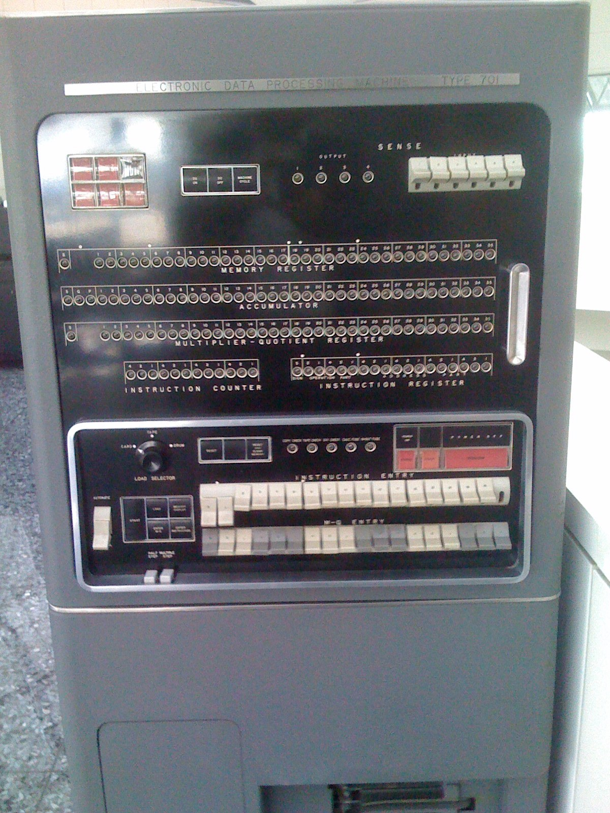
(for an IBM 701)
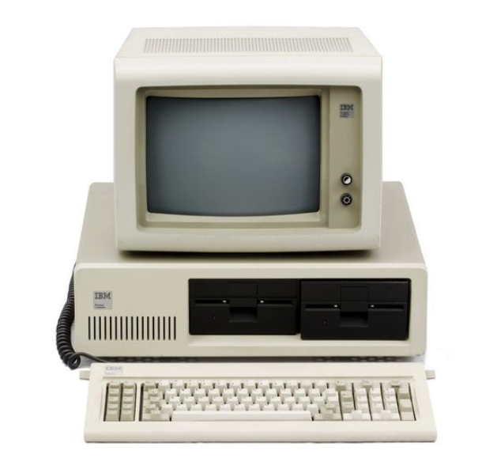
(IBM 5150)
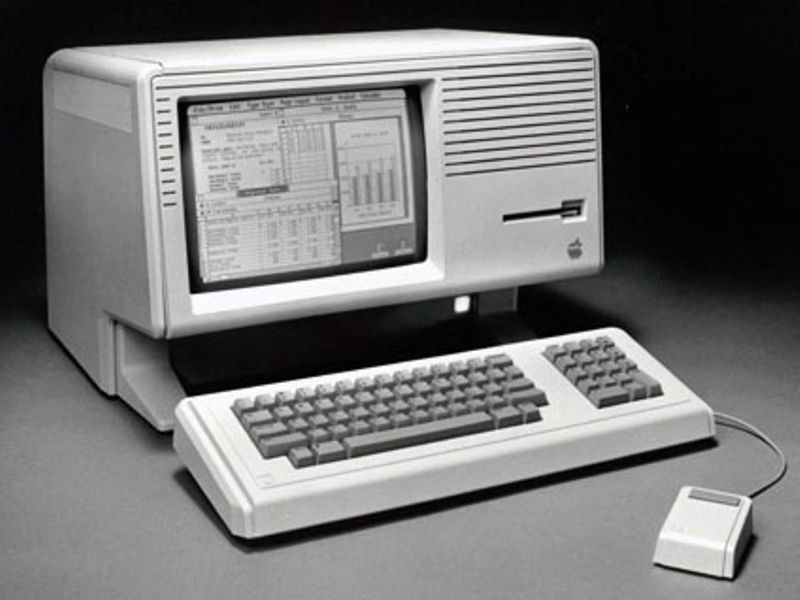
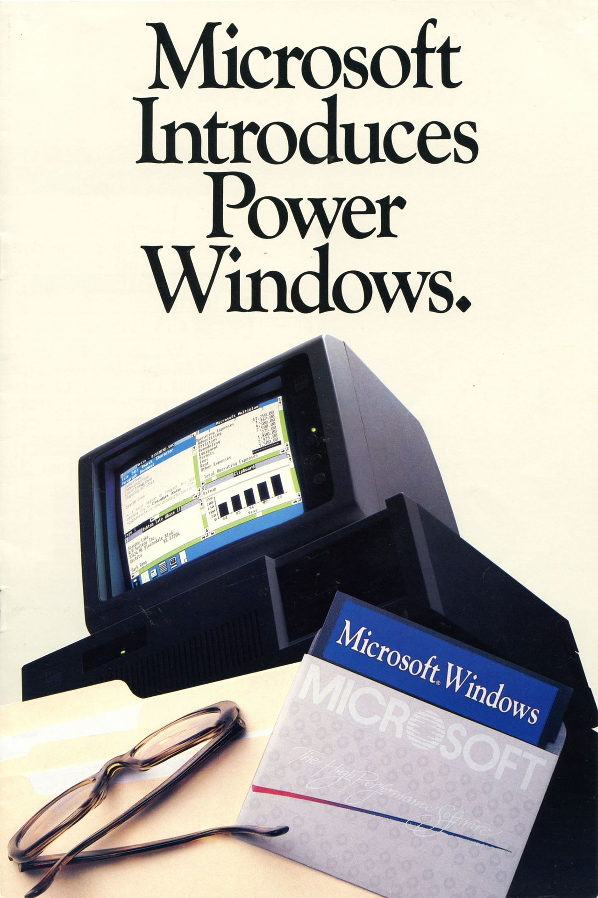
Windows 1.0
Click
- A software mechanism used to interact with your operating system using a mouse.
- You can use a GUI to visually navigate and click on icons and images to make things work.
- However, a GUI is inefficient for system administration tasks, especially if the environment is virtual or remote.
Enter
- A software mechanism you use to interact with your operating system using your keyboard.
- You can enter text commands to configure, navigate, or run programs on any server or computer system.
- All operating systems—including Linux, macOS, and Windows—provide a CLI for faster system interaction.
Why Command Line?
- It makes you more flexible, faster and more efficient.
- It’s less resource intensive. It’s scalable.
- The command line is ubiquitous.
- The skills are highly valued.
- It makes you look like a cool hacker 😎
- It’s easier than you might think!
sh) in 1976 at Bell Labs.Anatomy of a Command Line
Command Line Interface (CLI)
Q1 What does pwd print?
- Your username
- Your current working directory
- The last command you ran
- The parent directory
Q2 Fill in the blank:
cd ___ moves you one directory up from where you are.
cd .. (.. is the parent directory; . is the current one)Q3 You run:
$ cd /Users/vishal/projects $ pwd
What will pwd output?
- projects
- /Users/projects
- /Users
- /Users/vishal/projects
Q4 True or False: cd with no arguments takes you to your home directory.
cd ~ or cd $HOME.Q5 You want to go into a folder named Project Files inside your home directory. Which one works?
- cd ~/Project Files
- cd ~/"Project Files"
- cd ~/'Project Files'
- B or C
cd ~/Project\ Files). Unquoted, the shell sees two arguments.Q6 Given this directory tree:
/home/student ├─ notes │ └─ week1 └─ demos └─ cli
Starting from /home/student, write the exact command to move into the cli folder.
cd demos/cli (relative path; cd /home/student/demos/cli also works)Q7 Predict the output:
Assume you’re in /home/student/course/week1 and you run:
$ cd ../../.. $ pwd
What prints?
/home — each .. goes up one level: week1 → course → student → homeQ8 You run:
$ cd /var/log $ cd -
Where do you end up?
cd /var/log. cd - jumps to the previous directory ($OLDPWD).Q9 What command prints just your home directory path without moving you?
echo ~ or echo $HOMEQ10 You’re in /tmp. In one command, jump to your home directory’s Downloads folder using ~.
cd ~/DownloadsGit
Version Control System: Save As
Version Control System
Version Control Systems
- Clients don’t just check out the latest snapshot of the files; rather, they fully mirror the repository, including its full history.
- Thus, if any server dies, and these systems were collaborating via that server, any of the client repositories can be copied back up to the server to restore it.
- Every clone is really a full backup of all the data.
Goals of Git
- Speed
- Simple design
- Strong support for non-linear development (thousands of parallel branches)
- Fully distributed
- Able to handle large projects like the Linux kernel efficiently (speed and data size)
A Brief History of Git
“I'm an egotistical bastard, and I name all my projects after myself. First ‘Linux’, now ‘git’.”
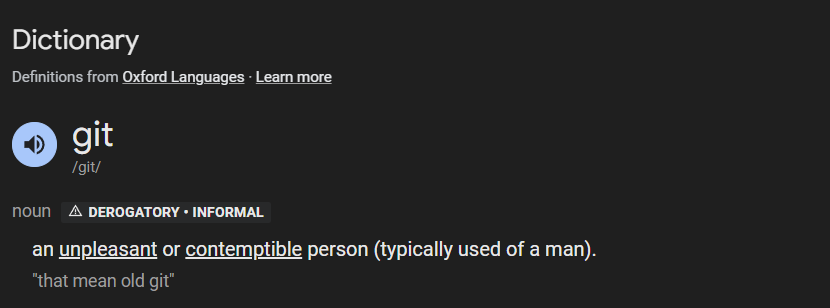
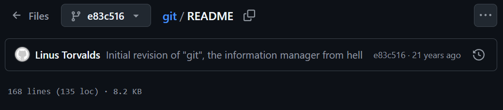
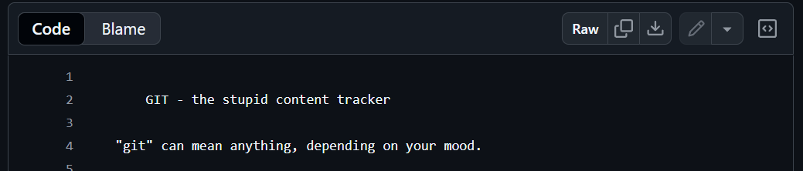
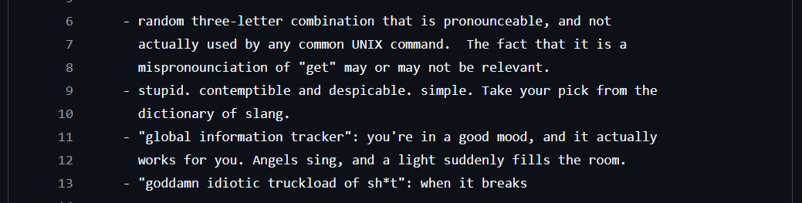
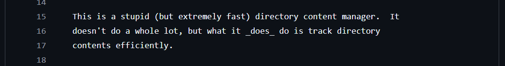
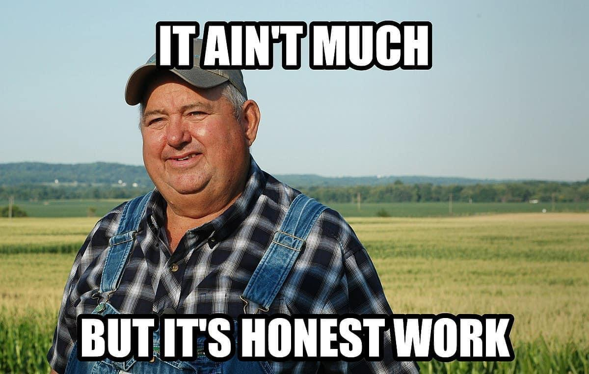
Create a personal account on github.com.
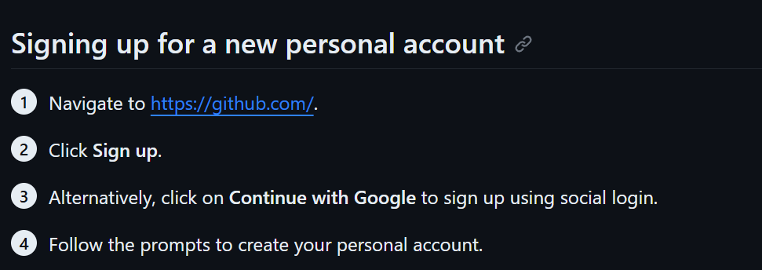
Your Code Might Survive for 1,000 Years
Why would anyone want to preserve today’s software for 1,000 years?
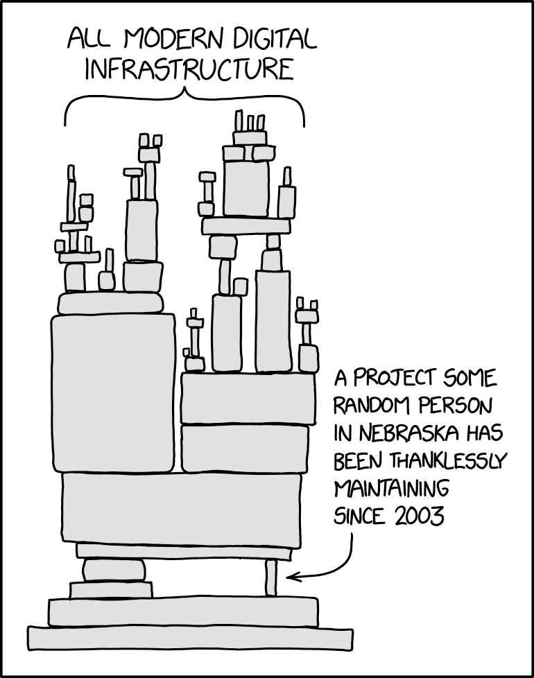
Git Process: Add, Commit, Push
tracking it.
snapshot.
remote repo.
Git Branching
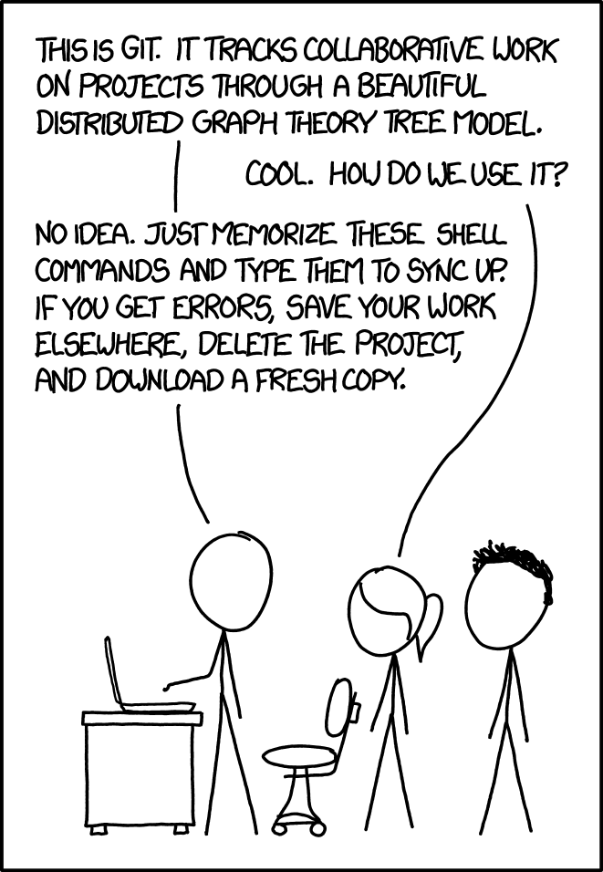
Git
Q1 What does git clone <URL> do?
- Copies a remote repo to your machine.
- Creates a blank repo on GitHub.
- Downloads only the latest commit.
- Copies your current folder into the remote.
Q2 Put these in the most common order for first-time work on a repo:
commit, push, clone, add
clone → add → commit → pushQ3 You just ran:
echo "hello" > notes.txt git status
Which state is notes.txt in?
- Untracked
- Staged
- Committed
- Pushed
Q4 You created two files: a.py, b.py. You only want to stage a.py.
Which command should you use to do this?
git add a.py (not git add ., which would stage both)Q5 True or False: git push sends your local commits to the remote repository.
Q6 To create a new branch named feature-login:
- git branch feature-login
- git -b feature-login
- git branch --new feature-login
- git push feature-login
git checkout -b feature-login / git switch -c feature-login create and switch to it)Q7 What’s the difference between staging and committing?
git add) selects which changes go into the next snapshot. Committing (git commit) records that snapshot in the repo history.Python Virtual Environment (venv)
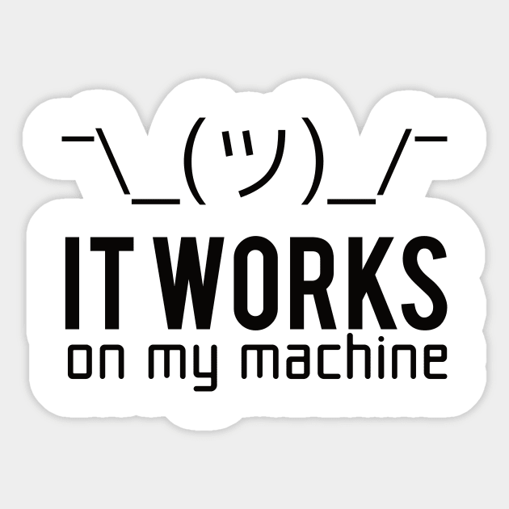
a Project
a Python venv
Dependencies
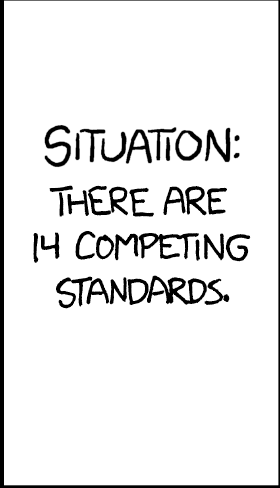
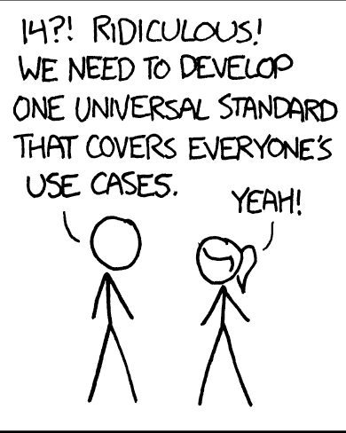
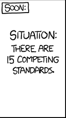
Creating a Virtual Environment (venv)
How It Works: $PATH
- When you run the
pythoncommand, or execute code in Jupyter Notebook, the Python interpreter looks for a python executable file in the system environment variable called$PATH… - … Unless you are inside a virtual environment.
- When you create a venv, a new (hidden) directory is created. It contains:
- A directory named
site_packagesthat will store all installed packages. - A file named
pyvenv.cfgwhich includes a path to the Python executable. - The Python interpreter will now use this Python executable to execute Python scripts.
- And all Python packages will be installed within the “local”
site_packagesdirectory.
- A directory named
The Process
Python venv
packages.
execute code.
dependencies.
dependencies.
write) code.
Python Virtual Environment
Q1 What’s the main reason to use a virtual environment?
- Make Python run faster
- Keep project dependencies isolated
- Share secrets with teammates
- Compile Python to C
Q2 What’s the command to create a virtual environment named vcu using the standard library?
python -m venv vcuQ3 True or False: deactivate deletes the virtual environment folder.
$PATH; the folder stays until you delete it.Q4 Put these in the usual order for a fresh project:
- pip install -r requirements.txt
- python -m venv .venv
- pip freeze > requirements.txt
- activate the venv
Q5 You forgot to activate and installed packages globally by accident. Describe a way to undo or mitigate that.
pip uninstall <pkg>; pip freeze shows what landed there), then activate the venv and install again. Check which python before installing.Unit Testing
Mars Climate Orbiter (1998–1999)
Launched Dec. 11, 1998 to study Mars from orbit and relay communications for the Mars Polar Lander. Last contact: September 23, 1999, nine months after launch. It had burned up in Mars’ atmosphere.
Quiz NASA lost a spacecraft despite having sophisticated engineers and extensive software systems. What do you think went wrong?
- A mathematical formula was incorrect.
- Two systems used incompatible measurement units.
- The software ran out of memory.
- A programmer accidentally deleted critical code.
Mars Climate Orbiter: What Went Wrong
“…the Mars Climate Orbiter was unsuccessful due to a navigation error caused by a failure to translate English units to metric. Last contact with the spacecraft was on September 23, 1999, 9 months after launch, and an investigation found that the spacecraft burned up in Mars’ atmosphere.”
Suppose a Python function expects distances in kilometers, but another function provides miles. Would the code necessarily crash?
Anatomy of a Test
A test checks the outcome of a specific behavior and ensures it aligns with the expectations.
The focus is less on how or why it happened, and more on what happened.
Example
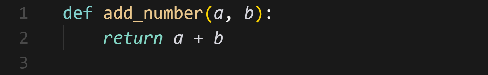
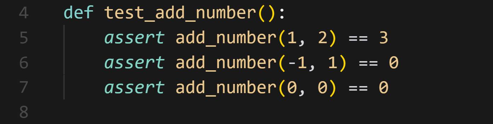
Pytest
pip install pytest
Pytest Exercise
- Create a new Python virtual environment for this exercise or reuse the one that we created in the previous section.
- Install
pandas. - Write a simple function to load
heart.csvfile into a Pandas dataframe. - Write a test to verify that the dataframe contains twelve columns.
- Check if you already have
pytestin the virtual environment. Install it if needed. - Run the test and check the results. The test should pass.
- Write another test to verify that there are no null values in any columns.
- Run the test and check the results. The test should pass.
- Write another test to verify that the column
heart_diseaseis present. - Run the test and check the results. Inspect the results and figure out why the test failed.
Who Tests What
/ product owner
/ AI engineer
Unit tests are written by whoever writes the code. Independent testing happens at the levels above, by people who start from the requirements.
Test the Intent, Not the Implementation
- Independent testers never read the implementation first. That is the whole point of their independence.
- Working alone? Write the test from the spec before the code, and have your reviewer review the tests, not just the code.
- Mars Climate Orbiter: both teams’ software passed their own tests. Nobody tested the interface between them.
Mariner 1 (1962)
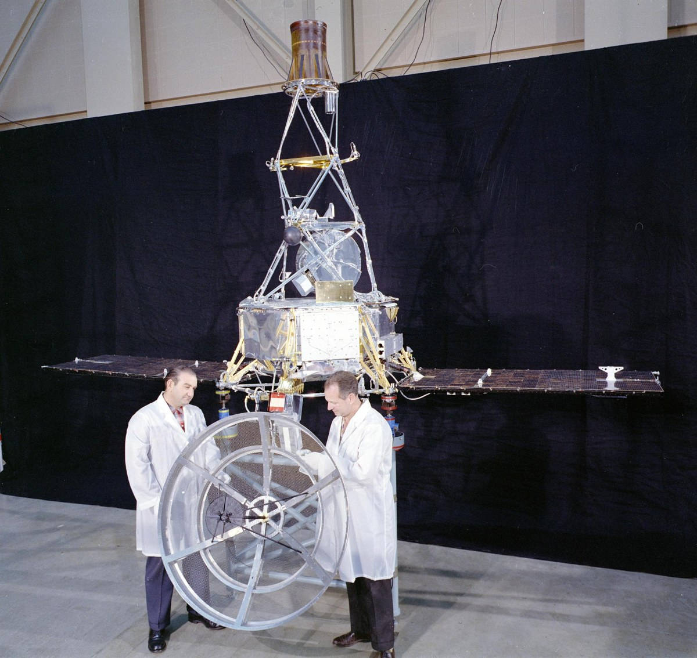
The first U.S. attempt to send a spacecraft to Venus. Launched July 22, 1962 on an Atlas Agena B. The rocket veered off course and the Range Safety Officer sent a destruct command at T+294.5 seconds. Investigators traced it to the guidance software.
Quiz What was the bug?
- An integer overflow in the flight computer.
- A single missing character when an equation was typed into code.
- The program loaded the trajectory table for a different rocket.
- A cosmic ray flipped a bit in memory.
Mariner 1: The Costliest Typo in Programming History
“…a software error, the omission of an overbar for the symbol R for radius (R instead of R̅) in an equation, caused the program to not respond as planned. It should be noted the omission was not a hyphen, as is sometimes erroneously reported.”
The equation was correct on paper; the typo was made transcribing it into code. What kind of test would have caught a missing overbar?
Project Code Structure
Noble’s Principles
“Let us change our traditional attitude to the construction of programs.
Instead of imagining that our main task is to instruct a computer what to do, let us concentrate rather on explaining to human beings what we want a computer to do.”
Elements of a Data Science Project
.py files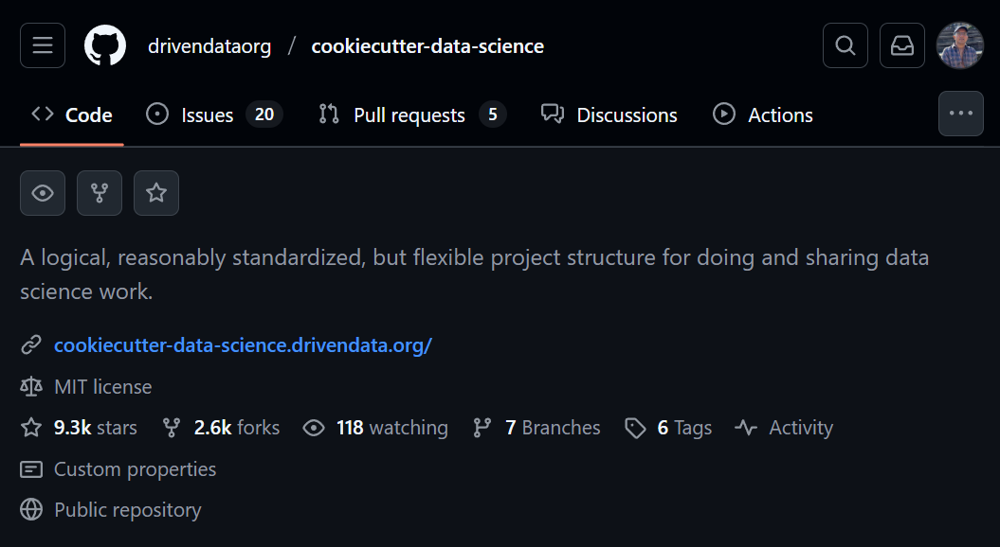
Cookiecutter Data Science: Opinions
Data analysis is a directed acyclic graph.
The best way to ensure reproducibility is to treat your data analysis pipeline as a directed acyclic graph (DAG).
This means each step of your analysis is a node in a directed graph with no loops. You can run through the graph forwards to recreate any analysis output, or you can trace backwards from an output to examine the combination of code and data that created it.
Cookiecutter Data Science: Opinions
Raw data is immutable.
That proper data analysis is a DAG means that raw data must be treated as immutable—it's okay to read and copy raw data to manipulate it into new outputs, but never okay to change it in place.
Cookiecutter Data Science: Opinions
Data should (mostly) not be kept in source control.
Another consequence of treating data as immutable is that data doesn't need source control in the same way that code does.
Therefore, by default, the data/ folder is included in the .gitignore file.
If you have a small amount of data that rarely changes, you may want to include the data in the repository.
Cookiecutter Data Science: Opinions
Notebooks are for exploration and communication,
source files are for repetition.
Source code is superior for replicability because it is more portable, can be tested more easily, and is easier to code review.
Cookiecutter
How to Name Files
- ProjectBrief_FINAL (2).pptx
- Sales Report 12-04-09.csv
- 2012-04-09_sales-report.csv
- 2025-09-24_project-brief_v03.pptx
- 20250924_lab_notes.md